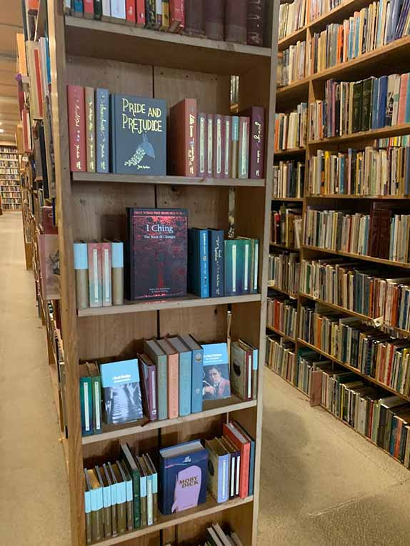
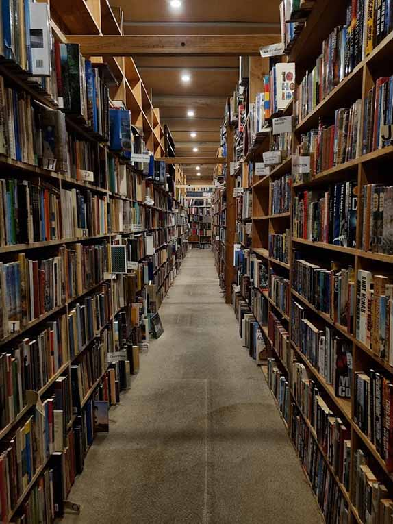

Genres

Archive Fine Books is a haven for book enthusiasts, offering a wide range of genres,
including classic literature, contemporary fiction, non-fiction, and rare books. With
renowned authors like Austen, Dickens, and Shakespeare, the selection is vast. Non-fiction
options cover history, science, politics, and philosophy, while rare books cater to collectors.
Whether a casual reader or serious collector, Archive Fine Books is a must-visit destination.
Price

The pricing of books at Brisbane Archive Fine Books is influenced by factors such as rarity
and collectability. The range of prices at the store caters to different budgets and interests,
offering both high-end and more affordable options. Customers can expect to find value in the
pricing, as the store's collection is carefully curated and reflects the quality and rarity of the books.
Interior

Archive Fine Books' interior exudes literary charm and curiosity. The vast collection of books,
old and new, are meticulously organized on shelves that reach from floor to ceiling. The warm
lighting and classical music create a cozy atmosphere. Vintage book covers, literary quotes,
and occasional artwork adorn the walls, while a dedicated section for rare and collectible
books showcases literary masterpieces.
"This is without doubt the best second-hand bookshop in Brisbane. I can spend hours navigating the shelves. There is a great selection of books for everyone and prices are extremely good (I've always paid between $10 and $20 for magnifique and well-looked after titles)."- José Tenorio